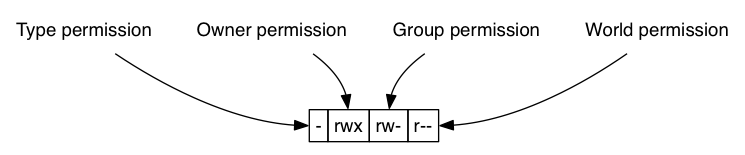
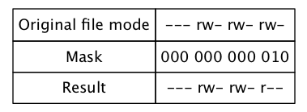

Chapter 9
Table of Contents
Permissions
Owners, Group Members, and Everybody Else
- id 命令会列出当前用户(也可以指定)所属的user id, groupid,并且会指出其属于哪
些group
[hfeng@harrifeng ~]$ id uid=1000(hfeng) gid=100(users) groups=100(users),10(wheel)
Reading, Writing, and Executing
- 下图精确的表达了在ls -l出来的前10个字符是干嘛的. r就是可读, w是可写,x是可执
行

- 其中的Type permission有如下几种:
Attribute File Type - A regular file d A directory l A symbolic link c A character special file b A block file.
chmod-Change File Mod
- chmod命令就是为了更改rwx属性的,其使用下面列表的三种方式来表示想要改成的mode
Octal Binary File Mode 0 000 --- 1 001 –x 2 010 -w- 3 011 -wx 4 100 r-- 5 101 r-x 6 110 rw- 7 111 rwx - 要把上面的mode施加于不同的作用域,是下面图标要表示的
Symbol Meaning u Short for user but means the file or directory owner g Group owner o Short for others but means world a Short for all; the combination of u, g, and o - 下面是mode和作用域结合起来的例子
Notation Meaning u+x Add execute permission for the owner u-x Remve execute permission from the owner +x Add execute permission for the owner, group, and world (== a+x) o-rw Remove the read and write permissions from anyone besides the owner and group owner go=rw Set the group and anyone besides the owner to have read and write permission. If either the group owner or world previously had execute permissions, remove them u+x, go=rx Add execute permission for the owner and set the permissions for the group and others to read and execute. - 创建一个新文件的时候,其格式为如下rw-rw-rw-, 但是你可以通过umask来指定

- umask的例子
bash-3.2$ umask 000 bash-3.2$ rm foo.txt bash-3.2$ > foo.txt bash-3.2$ ls -l foo.txt -rw-rw-rw- 1 hfeng staff 0 Mar 8 12:29 foo.txt bash-3.2$ rm foo.txt ; umask 0022
Changing Identities
su-Run a Shell with Substitute User and Group IDs
- su命令我们很熟悉了,但是其实它的原型并不是只是对root有效(只是默认不指定用户
就是root用户)其使用方法如下
su [-[l]] [user]
- 如果我们使用了-l(甚至是-),那么shell就是一个login shell, 也就意味着:
- [user]标记的environment 导入
- working directory转化到/home/[user]
sudo-Execute a Command as Another User
- sudo就是给某些用户某些root权限,好处是权限可控,而且用户不需要知道root密码
chown-Change File Owner and Group
- chown使用方法如下,可以更改文件的owner和group
chown [owner][:[group]] file ...
- 其owner group的组合例子如下
Argument Result bob Changes the ownership of the file from its current owner to user bob bob:users Changes the ownership of the file from it current owner to user bob and changes the file group owner to group users :admins Changes the group owner to the group admins. The file owner is unchanged bob: Changes the file owner from the current owner to suer bob and changes the group owner to the login group of user bob
chgrp-Change Group Ownership
- 老版本的Unix chown不能改group,现在chgrp的存在已经没什么必要了